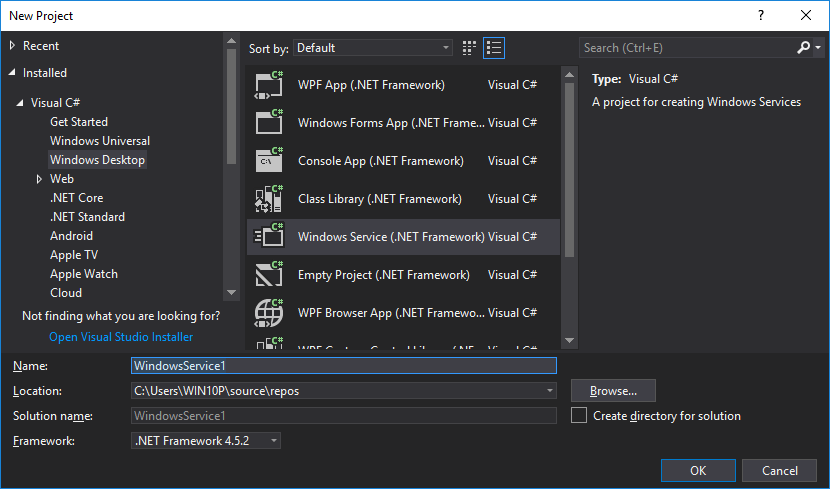

Windows服务是非常强大的应用程序，可用于在backgorund中执行许多不同类型的任务。他们可以在不需要任何用户登录的情况下启动，并且可以使用除登录用户之外的其他用户帐户运行。但是，如果通过遵循常规服务开发步骤开发Windows服务应用程序，即使在开发环境中也难以调试。
本文提出了一种不使用任何服务开发库（如Topshelf）开发Windows服务的不同方法，以便在开发阶段轻松监视和调试。
示例项目具有以下功能;
示例项目网站源码是使用Visual Studio 2017准备的。
在Visual Studio中，单击“文件”\“新建”\“项目”。选择“Visual C＃\ Windows桌面\ Windows服务”项目类型。

右键单击项目名称并选择“属性”，打开项目属性。
从“输出类型”选择列表中选择控制台应用程序。
从Package Manager控制台或Manage Nuget Packages菜单选项安装log4net nuget软件包。
log4net是一个非常强大的日志库，可以将日志写入许多目标，如文本文件，控制台，数据库，Windows事件日志，甚至可以将它们作为电子邮件发送。这些日志编写器（或目标）称为“appender”。log4net配置必须至少有一个appender，但它可能有很多。每个appender都有自己的设置。
log4net配置可以添加到app.config文件中，也可以是单独的文件。我更喜欢单独的文件方法，因此为log4net添加两个配置文件，用于调试和发布模式。名称无关紧要，您可以将它们命名为“ log4net.debug.config ”和“ log4net.prod.config ”。Debug配置文件有两个appender; RollingFileAppender和 ColoredConsoleAppender。生产配置文件还有两个appender; RollingFileAppender和 EventLog。但 EventLogappender已注释掉，如果要编写Windows事件日志，可以取消注释。
最小日志级别在<root>元素下定义为<level>配置元素。对于调试配置级别是DEBUG，对于生产它是INFO。有效等级是; DEBUG，INFO，WARN，ERROR。有关详细信息，请参阅log4net文档。
下一步配置步骤是告诉log4net库在调试和释放模式下使用哪个文件。为此，请打开AssemblyInfo.cs文件并为log4net添加程序集级别属性。添加这些行以在调试和释放模式下在两个文件之间切换。
#if DEBUG
[ assembly：log4net.Config.XmlConfigurator（ConfigFile = “ log4net.debug.config”，Watch = true）]
#else
[ assembly：log4net.Config.XmlConfigurator（ConfigFile = “ log4net.prod.config”，Watch = 真的）]
#endif它是一个非常简单的类 Start，Stop用于启动和停止后台任务处理线程的方法以及连续写入日志的线程方法。
class SampleBackgroundService
{
// 从log4net获取此类的记录器LogManager
private static ILog logger = LogManager.GetLogger（typeof（SampleBackgroundService））;
// 启动线程
public void Start（）{...}
// 停止线程
public void Stop（）{...}
// 执行后台任务并写入日志的服务线程
private void serviceThread（）
{
while（！stopRequested）
{
// 写出不同类型的日志......
}
}
}我已将自动添加的Windows Services类重命名为 SampleWindowsService。此类继承自ServiceBase，并且是在启动或停止Windows服务时调用其方法OnStart和类的类OnStop。该类仅创建类的实例 SampleBackgroundService并调用其Start和Stop方法。
创建新的Windows服务项目时，自动生成的Main方法包含用于创建和启动自动生成的Windows服务的代码。但是，Windows服务无法作为常规应用程序启动和托管。因此，当您尝试运行该应用程序时会出现一条错误消息。
要运行和测试我们的应用程序，我们不需要创建真正的Windows服务实例，因为除了创建和启动SampleBackgroundService类的实例之外，它不包含任何代码 。Main方法中更新的代码在SampleBackgroundServiceDebug模式下创建并启动类的实例， 并作为控制台应用程序运行。但是在发布模式下创建并运行真正的Windows服务。
static void Main（）
{
ILog logger = LogManager.GetLogger（typeof（Program））;
#if DEBUG //在调试模式下作为常规控制台应用程序运行
// 手动创建SampleBackgroundService类的实例并调用其start方法
logger.Info（“正在启动服务......”）;
SampleBackgroundService _backgroundService = new SampleBackgroundService （）;
_backgroundService.Start（）;
logger.Info（“ 服务已启动。按Enter键停止...”）;
到Console.ReadLine（）;
logger.Info（“ 停止服务......”）;
_backgroundService.Stop（）;
logger.Info（“已停止。”）;
#else //在Release模式 ServiceBase [] ServicesToRun中创建并运行真正的Windows服务实例
;
ServicesToRun = new ServiceBase []
{
新的 SampleWindowsService（）
};
ServiceBase.Run（ServicesToRun）;
#endif
}8-添加Service Installer组件，以便能够使用InstallUtil.exe安装此服务
要添加安装程序组件，请在解决方案资源管理器上双击SampleWindowsService.cs。它将显示服务的设计视图。
右键单击设计区域，然后单击上下文菜单中的“添加安装程序”。
这会将ProjectInstaller.cs和设计器文件添加到项目中。删除自动生成的代码 ProjectInstaller.InitializeComponent()方法和自动生成的变量（serviceProcessInstaller1，serviceInstaller1）。
将以下代码添加到 ProjectInstaller.cs文件中;
public partial class ProjectInstaller：Installer
{
public const string SERVICE_NAME = “ Sample Background Service” ;
private readonly ServiceProcessInstaller m_ServiceProcessInstaller;
private readonly ServiceInstaller m_ServiceInstaller;
public ProjectInstaller（）
{
// 安装进程的安装程序（在本例中为'DebuggableWindowsService.exe'）
// 只能有一个ServiceProcessInstaller
m_ServiceProcessInstaller = new ServiceProcessInstaller（）;
m_ServiceProcessInstaller.Account = ServiceAccount.LocalSystem;
// 在应用程序中注册实际Windows服务实现的安装程序
// 可能有一个或多个ServiceInstaller
m_ServiceInstaller = new ServiceInstaller（）;
m_ServiceInstaller.ServiceName = SERVICE_NAME;
m_ServiceInstaller.Description = “ ” ;
m_ServiceInstaller.StartType = ServiceStartMode.Automatic;
m_ServiceInstaller.DelayedAutoStart = true ;
Installers.Add（m_ServiceProcessInstaller）;
Installers.Add（m_ServiceInstaller）;
的InitializeComponent（）;
}
// ...
}如果要在安装服务之前和之后执行任何任务，可以覆盖适当的基本方法，例如 OnBeforeInstall， OnBeforeUninstall...
您无需安装（或向Windows服务注册表注册服务）您的服务即可运行和调试。但是，如果需要，可以使用InstallUtil.exe来安装和卸载服务。InstallUtil.exe位于.NET Framework安装文件夹下。例如，“ C：\ Windows \ Microsoft.NET \ Framework \ v4.0.30319 ”
要注册该服务，请打开命令行窗口并使用可执行文件的完整路径运行InstallUtil.exe。您可能需要“以管理员身份”运行命令行窗口才能注册服务。
C ：\ Windows \ Microsoft.NET \ Framework \ v4.0.30319> InstallUtil.exe“D：\ DebuggableWindowsService \ src \ bin \ Release \ DebuggableWindowsService.exe”要卸载服务，请使用/ u选项运行相同的命令。
C ：\ Windows \ Microsoft.NET \ Framework \ v4.0.30319> InstallUtil.exe / u“D：\ DebuggableWindowsService \ src \ bin \ Release \ DebuggableWindowsService.exe”9-在调试模式下运行应用程序以查看日志输出和调试
下面是在调试模式下运行应用程序时显示的示例输出。
关于Windows服务的重要说明
Windows Service应用程序在几个方面与其他常规应用程序不同。因此，应用程序在调试（控制台应用程序模式）和发布（Windows服务模式）模式下的行为可能不同。
首先，当您在调试模式下运行应用程序时，其工作目录将是可执行文件所在的路径。例如“ D：\ DebuggableWindowsService \ src \ bin \ Release \ DebuggableWindowsService.exe ”
但是，当您使用InstallUtil.exe或安装应用程序安装它并从Windows服务管理应用程序运行它时，其工作目录将是“ C：\ Windows \ System32 ”或“ C：\ Windows \ SysWOW64 ”，具体取决于您的服务是64位32d无论是在32位还是64位Windows上运行。
如果要在安装目录中读取或写入文件而不是系统目录，则可以在启动时使用工作目录。例如;
Environment.CurrentDirectory = Path.GetDirectoryName（Assembly.GetExecutingAssembly（）。Location）;其次， Windows服务可以使用除登录用户之外的其他用户帐户运行。当应用程序rusn作为真正的Windows服务时，某些在调试模式下运行的操作可能无法运行。这些操作的示例是访问目录或网络路径，打开端口......
第三， Windows服务没有用户界面，通常无法显示用户界面。Windows操作系统阻止了他们对显卡的访问。遗憾的是，无法使用Windows服务中的强大GPU。要了解有关此限制的更多信息，请搜索“会话0隔离”。